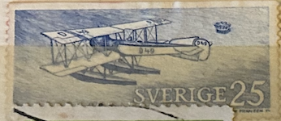
| SOURCE | TITLE| IMAGE MATCH | click to source page |
| eBay | SWEDEN 938 (Mi763D) - Aviation Heritage "Friedrichshafen FF49 Plane" (pb62299) | eBay | 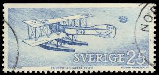 |
| eBay | Year 2001 Flyget Då Och Nu (Aviation Then And Now) MNH Swedish Postage Stamps. | eBay | 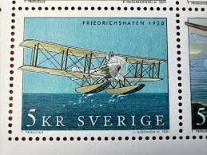 |
| Blogger.com | Nostalgorama: Frimärken från 1970-talet | 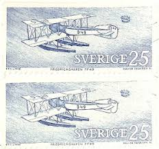 |
| avrosys.nu | Friedrichshafen FF 49C page 1 | 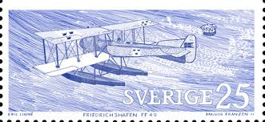 |
| 1stDibs | Heidler & Heeps - Heidler and Heeps Stamp Collection 'Stockholm '73', Contemporary Color Photography For Sale at 1stDibs | marc yankus | 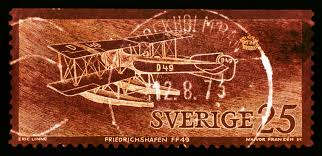 |
| 22 Airmail Stamps ideas | stamp collecting, postage stamps, postal stamps | 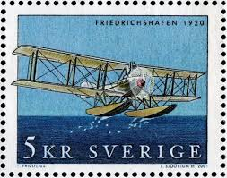 | |
| eBay | Postkarte Passagierschiff Tor Britannia Tor Line 03.05.1976 gel_2 | eBay | 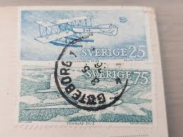 |
| Etsy | Soviet Union (set of 4), USSR Postage Stamp, 1974, Postage Mark, Biplane, Mozhaisky Plane, Flying Boat Postage Stamp, Not Used, Collectible - Etsy | 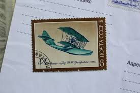 |
| Wikipedia | Gallaudet D-2 - Wikipedia | 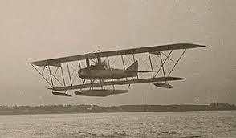 |
| eBay | Sweden Aviation Stamps for sale | eBay | 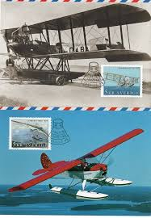 |
| PICRYL | 28 Grigorovich m 5 Images: PICRYL - Public Domain Media Search Engine Public Domain Search | 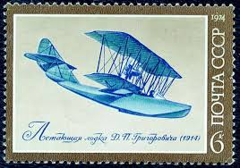 |
| eBay | VINTAGE POSTCARD TOPIC: Airplanes | eBay | 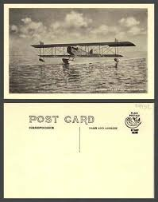 |
| PICRYL | An Air Force C-12 Huron assigned to the 459th Airlift - PICRYL - Public Domain Media Search Engine Public Domain Search | 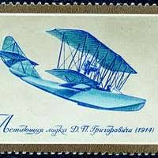 |
| iStock | Antique Artist Signed Postcard By Arthur Thiele Humour 1910 Stock Photo - Download Image Now - iStock | 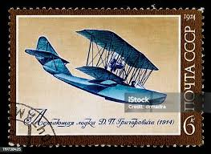 |
| eBay | Colony Aviation Postal Stamps for sale | eBay | 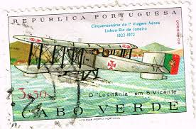 |
| The Channel Islands and The Great War | CHANNEL ISLAND | 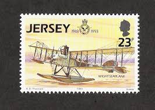 |
| spoonercentral.com | Bay Shore & Beyond | 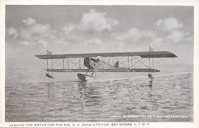 |
| Dreamstime.com | Airplane Message Float Stock Photos - Free & Royalty-Free Stock Photos from Dreamstime | 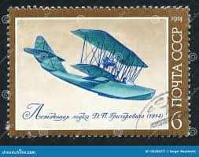 |
| Wikipedia | Kaiserliche Werft Wilhelmshaven 401 - Wikipedia | 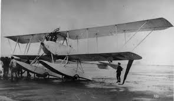 |
| Wikipedia | Lioré et Olivier LeO 25 - Wikipedia | 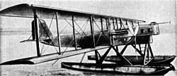 |
| eBay | BELGIUM CONGO 1926 PS CARD - PM=LISALA= WITH POSTAGE DUE VF | eBay | 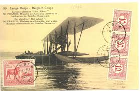 |
| Raptis Rare Books | British, French, and German Aircraft. [For Official Use Only]. - Raptis Rare Books | Fine Rare and Antiquarian First Edition Books for Sale | 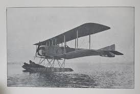 |
| Paul K. Guillow, Inc. | How a Century of Aviation History Shaped Guillow's Model Kits - Paul K. Guillow, Inc. | 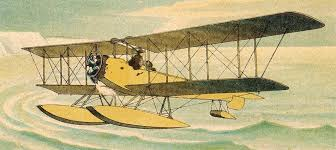 |
| GetArchive | 1974. Самолет Можайского - postal stamp, Soviet Union - PICRYL - Public Domain Media Search Engine Public Domain Image | 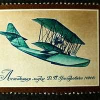 |
| What are the details of the first airplane's arrival in Kissimmee, Florida? | 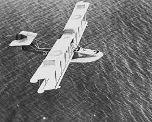 | |
| Photos.com | Boeing Framed Art Prints - Photos.com | 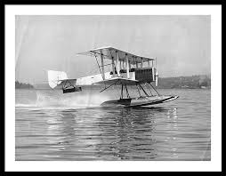 |
| eBay | RAF Supermarine SOUTHAMPTON Mk.I Flying Boat / Seaplane Aircraft Stamp (2018) | eBay | 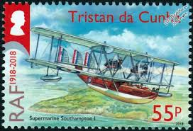 |
| eBay | Vintage Real Photo Post Card Leaving the Water for the Air, U.S. Aero Station | eBay | 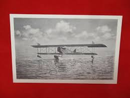 |
| eBay | Aviation No. 381 An Aerial Naval Scout England Ready To Strike | eBay | 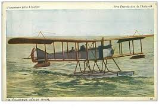 |
| AirHistory.net | Aircraft Photo of No Reg | Gallaudet D-2 | AirHistory.net #482380 | 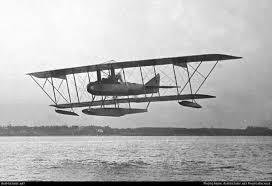 |
| Fine Art America | 1916 Bi-plane Photograph by Keystone - Fine Art America | 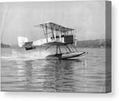 |
| eBay | 1985 FRANCE AIRMAIL 20FR VF USED FRANCE K2 | eBay | 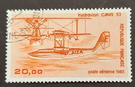 |
| Their Flying Machines | Hansa-Brandenburg GW / GDW | 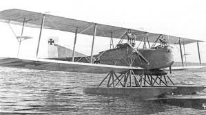 |
| HistoryLink.org | Munter, Herbert A. (1895-1970) - HistoryLink.org | 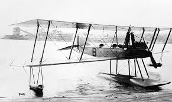 |
| Wikimedia.org | Category:Friedrichshafen FF.19 - Wikimedia Commons | 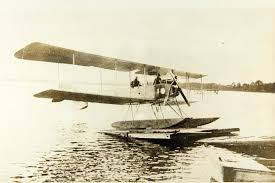 |
| Their Flying Machines | Curtiss L | 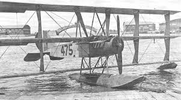 |
| View of Cayuga lake from Herbert F Johnson museum on Cornell campus | 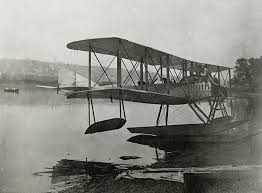 | |
| Their Flying Machines | Hansa-Brandenburg KW | 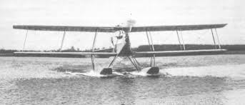 |
| Aerofiles | American airplanes: Boeing C-Z | 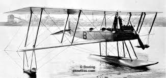 |
| Alamy | Old mail plane hi-res stock photography and images - Page 3 - Alamy | 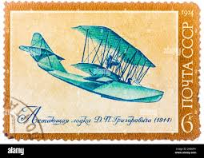 |
| Air Mail Pioneers | Airmail Pioneers: A Breif History | 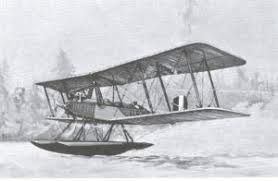 |
| Wikipedia | Grigorowicz M-5 – Wikipedia, wolna encyklopedia | 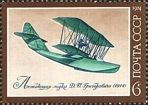 |
| Wikipedia | Curtiss Model N - Wikipedia | 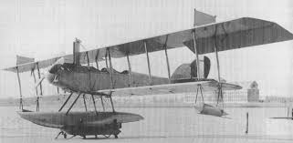 |
| Wingnut Wings | Wingnut Wings - 1/32 Gotha UWD | 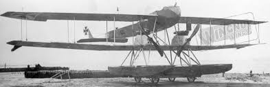 |
| Their Flying Machines | Friedrichshafen FF41 | 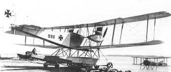 |
| 1000 Aircraft photos | Aeromarine 39-A | 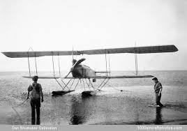 |
| Wikipedia | Short Mark 7 torpedo - Wikipedia | 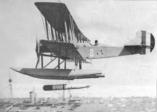 |
| Jalopnik | Boeing's First Airplane Was This Tiny Seaplane Called The B&W | 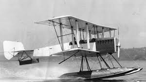 |
| Their Flying Machines | SIAI S.13 | 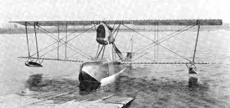 |
| Find an object | ||
| Wikipedia | Grigorovich M-5 - Wikipedia | |
| Wikipedia | Lioré et Olivier LeO H-190 - Wikipedia | |
| eBay | Sweden Maxi 2001, Aviation, Friedrichshafen FF 49, mint | eBay | |
| Segmento Magazine | A century in flight | |
| culture.tw | Photo of "Yi type Seaplane Trainer Ⅰ" at Wong Tsoo's album -國立成功大學博物館-Collection-2010-001-0052-044 | |
| Flickr | Ray Wagner Collection Image | PictionID:43642872 - Catalog:1… | Flickr | |
| Scalemates | Rumpler 6b1, Formaplane D18 (197x) | |
| Gallaudet D-4 biplane floatplane prototype first flow in 1918 : r/WeirdWings | ||
| Wikidata | Caspar C 27 - Wikidata | |
| Уголок неба | Index of /image/idop/other1/casparc27 |